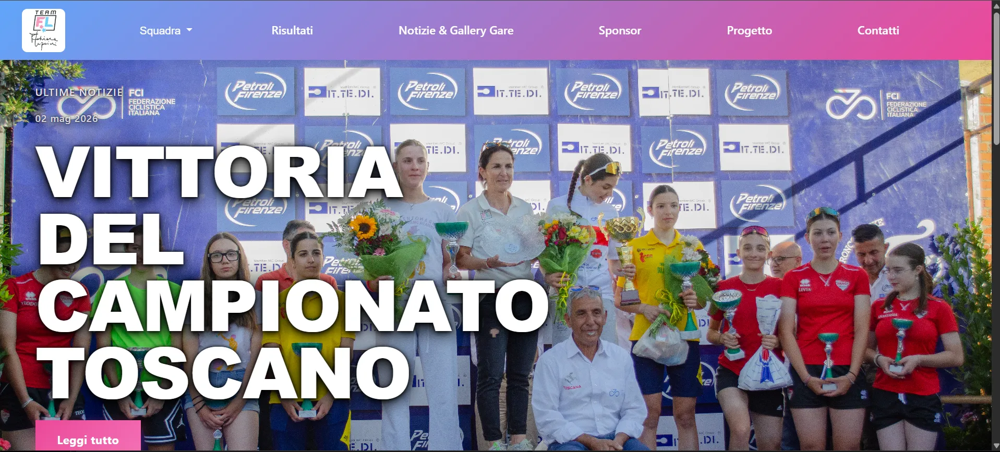
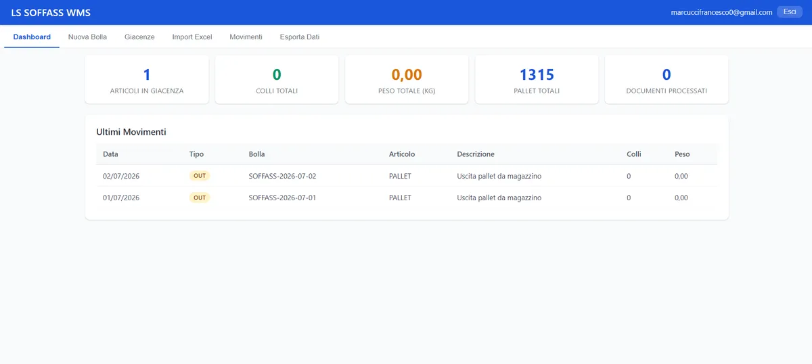
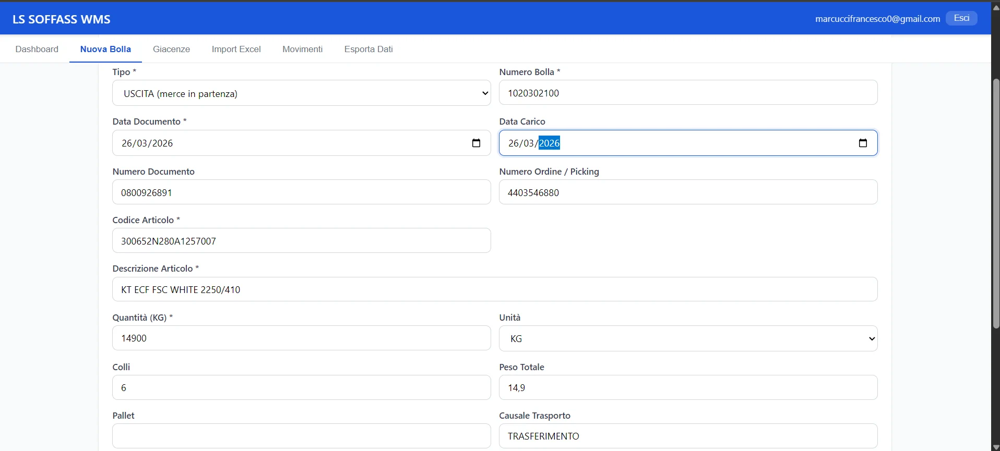
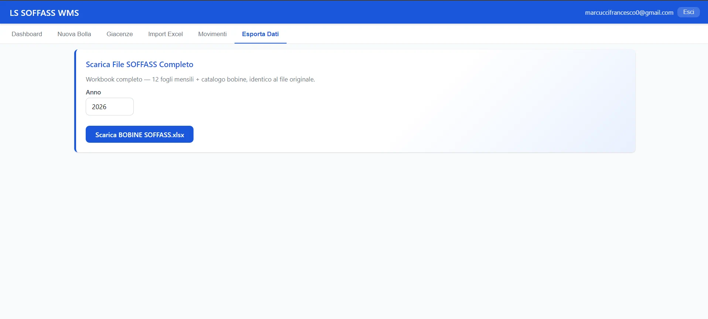
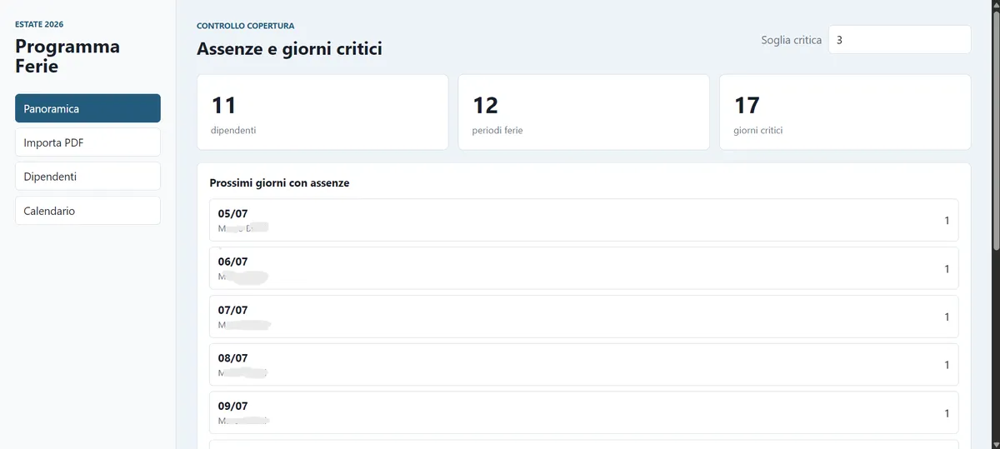
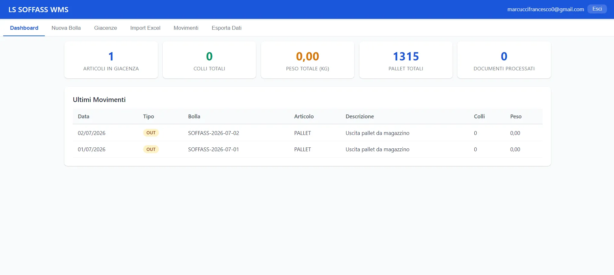

Web & Content Management
Team Fabiana Luperini
Professional website for a cycling team, focused on responsive design and content management.
VisitEngineering Focus
Web applications with responsive frontends, APIs and backend systems.
Automated workflows using scripts, APIs and custom tools to save time.
Databases designed for reliability, scalability and real-time operations.
Document processing that extracts, validates and transforms business data.
Custom software designed around real operational workflows.
Real-world project
Digitizing logistics processes through OCR, automation and real-time data management.


OCR document acquisition workflow

Data management and export
A warehouse management platform built to digitize manual logistics workflows through document processing, inventory management and automated data handling.
Manual document handling, Excel-based inventory management, transcription errors and limited visibility on warehouse operations.
A PWA platform with OCR document processing, barcode scanning, inventory management, database synchronization and automatic DDT generation.
React · Supabase · Tesseract OCR · PWA · Database systems
Automated document extraction, barcode scanning, inventory management and DDT generation reduced manual operations and improved data visibility.
Open source project
Development Environment Automation Platform
DevOS started from a real problem in software development: configuring and maintaining dev environments manually takes time and creates inconsistencies. The solution is an automation system that coordinates scripts, updates and automatic checks.
30 minutes of manual work for each update — patches, tests, rollbacks. Repetitive and error-prone.
A Node.js agent that automates the full workflow: PowerShell orchestration, sequential patches, automatic validation and rollback on failure.
Node.js · PowerShell · JavaScript
Setup in seconds. Automatic rollback prevents corruption. Fully reproducible.
Production projects
Additional projects

Web platform for managing leave requests with an approval workflow, replacing the old shared Excel system.

Data extraction system from unstructured PDFs, database organization and automatic report generation.
SourceEngineering Process
Understanding requirements, workflows and constraints.
Designing solutions and choosing the right technologies.
Building software with clean, maintainable code.
Checking functionality and improving reliability.
Releasing to production and maintaining stability.
Approach
Every project starts with a real problem. I analyze the context, design the architecture and build the solution — from the first line of code to production deployment. I work with companies like Logistic Solution to digitize operational workflows and with teams like Team Fabiana Luperini to build their digital presence.
I believe in software that solves problems, not software that follows trends. That's why I choose technologies based on the problem, not the other way around.
I keep learning and improving — backend architecture, cybersecurity, cloud infrastructure. Every project teaches me something new about building better software.
PHP · Python · C++ · SQL · Supabase · React
Contact
Interested in collaborating or discussing an idea? I'm open to projects, collaborations and new opportunities.